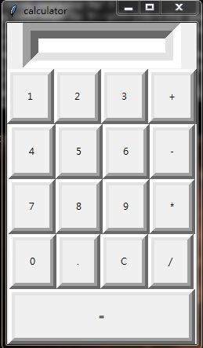

最終，我們完成了簡易計算機
而這計算機功能卻不是非常完整，它少了許多功能，像是括號、正負號.....等
且功能也有點缺陷，像是清除按鈕C只能在按下等號=之後使用，正數跟負數會衝突...等
再來希望這計算機程式可以像老師將Python-Course裡的語法一樣
將Tkinter導入到網頁上並執行
以下是成品圖

以下是完整計算機語法
import sys
from tkinter import *
NFU=Tk()
frame=Frame(NFU)
frame.pack()
NFU.title("calculator")
#建立可供輸入的視窗
num1=StringVar()
topframe=Frame(NFU)
topframe.pack(side=TOP)
block=Entry(frame,textvariable=num1,bd=20,insertwidth=1,font=30)
block.pack(side=TOP)
#定義鍵盤輸入
operator=""
def clear():
block.delete(0,END)
return
def clickbut(numbers):
global operator
operator=operator+str(numbers)
num1.set(operator)
#定義等號算出結果
def equal():
global operator
add=str(eval(operator))
num1.set(add)
operator=''
def equal():
global operator
sub=str(eval(operator))
num1.set(sub)
operator=''
def equal():
global operator
mul=str(eval(operator))
num1.set(mul)
operator=''
def equal():
global operator
div=str(eval(operator))
num1.set(div)
operator=''
#建立可輸入的按鍵設定
#第一排
frame=Frame(NFU)
frame.pack(side=TOP)
b1=Button(frame,padx=16,pady=16,bd=8,text="1",fg="black",command=lambda:clickbut(1))
b1.pack(side=LEFT)
b2=Button(frame,padx=16,pady=16,bd=8,text="2",fg="black",command=lambda:clickbut(2))
b2.pack(side=LEFT)
b3=Button(frame,padx=16,pady=16,bd=8,text="3",fg="black",command=lambda:clickbut(3))
b3.pack(side=LEFT)
b4=Button(frame,padx=16,pady=16,bd=8,text="+",fg="black",command=lambda:clickbut("+"))
b4.pack(side=LEFT)
#第二排
secondframe=Frame(NFU)
secondframe.pack(side=TOP)
b1=Button(secondframe,padx=16,pady=16,bd=8,text="4",fg="black",command=lambda:clickbut(4))
b1.pack(side=LEFT)
b2=Button(secondframe,padx=16,pady=16,bd=8,text="5",fg="black",command=lambda:clickbut(5))
b2.pack(side=LEFT)
b3=Button(secondframe,padx=16,pady=16,bd=8,text="6",fg="black",command=lambda:clickbut(6))
b3.pack(side=LEFT)
b4=Button(secondframe,padx=16,pady=16,bd=8,text="-",fg="black",command=lambda:clickbut("-"))
b4.pack(side=LEFT)
#第三排
thirdframe=Frame(NFU)
thirdframe.pack(side=TOP)
b1=Button(thirdframe,padx=16,pady=16,bd=8,text="7",fg="black",command=lambda:clickbut(7))
b1.pack(side=LEFT)
b2=Button(thirdframe,padx=16,pady=16,bd=8,text="8",fg="black",command=lambda:clickbut(8))
b2.pack(side=LEFT)
b3=Button(thirdframe,padx=16,pady=16,bd=8,text="9",fg="black",command=lambda:clickbut(9))
b3.pack(side=LEFT)
b4=Button(thirdframe,padx=16,pady=16,bd=8,text="*",fg="black",command=lambda:clickbut("*"))
b4.pack(side=LEFT)
#第四排
fourthframe=Frame(NFU)
fourthframe.pack(side=TOP)
b1=Button(fourthframe,padx=16,pady=16,bd=8,text="0",fg="black",command=lambda:clickbut(0))
b1.pack(side=LEFT)
b2=Button(fourthframe,padx=16,pady=16,bd=8,text=".",fg="black",command=lambda:clickbut("."))
b2.pack(side=LEFT)
b3=Button(fourthframe,padx=16,pady=16,bd=8,text="C",fg="black",command=clear)
b3.pack(side=LEFT)
b4=Button(fourthframe,padx=16,pady=16,bd=8,text="/",fg="black",command=lambda:clickbut("/"))
b4.pack(side=LEFT)
#第五排
fivthframe=Frame(NFU)
fivthframe.pack(side=TOP)
b1=Button(fivthframe,padx=104,pady=16,bd=8,text="=",fg="black",command=equal)
b1.pack(side=LEFT)
NFU.mainloop()